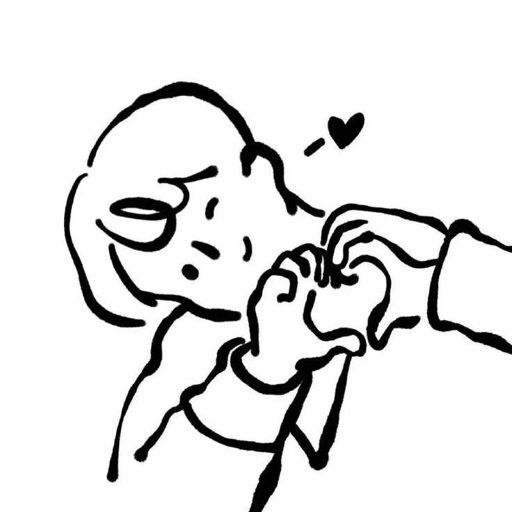
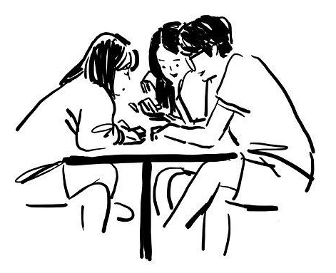
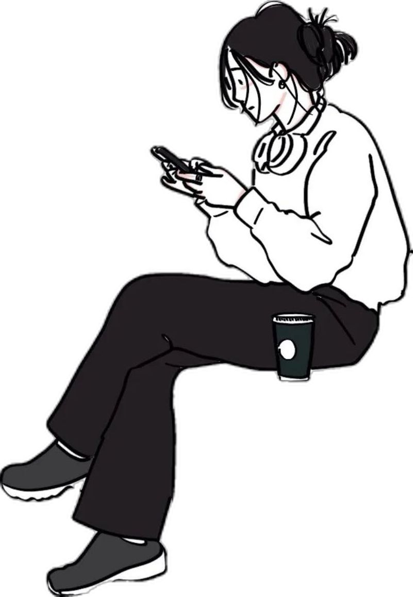

Мы рады тебя видеть и поздравляем с тем, что тебе повезло попасть в проект Москва в студентов верит! Надеемся, что ты обретешь здесь настоящих друзей и позитивно запомнишь это место на всю жизнь!

Настоятельно просим ознакомиться с Правилами проживания и Памяткой перед оплатой и заселением – так как это касается условий проживания, это касается ваших денег, вашего уровня жизни и вашей безопасности. Если не ознакомиться с Правилами, – то это полностью ваша ответственность.

На всю регистрацию тебе понадобится примерно 10-15 минут. Для входа нужен четырёхзначный код — его выдаёт модератор после собеседования психолога.